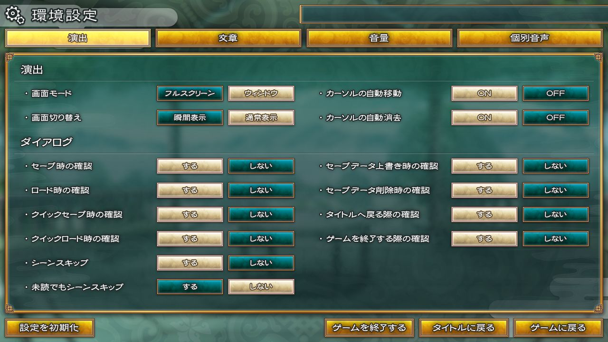
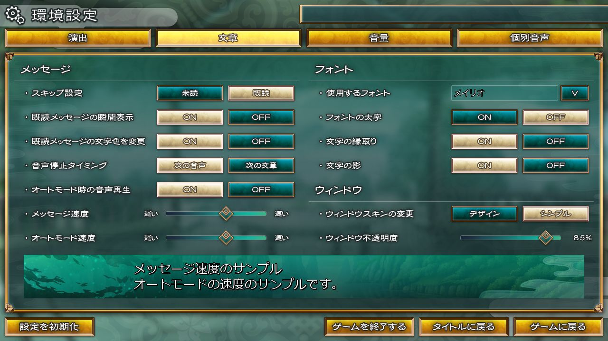
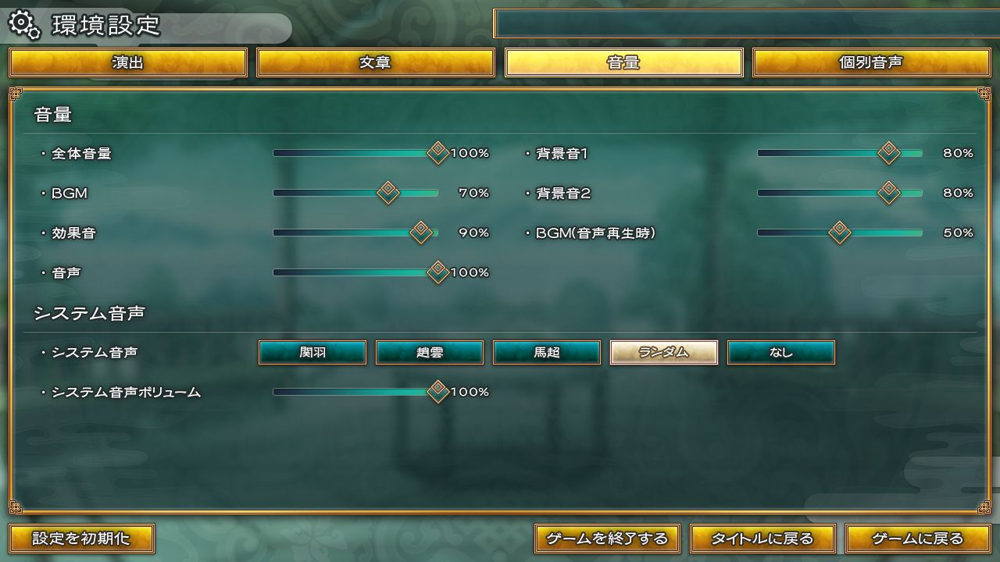
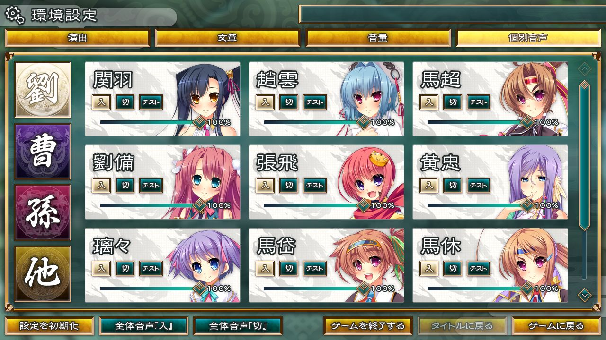

|
|||||||||||||||||||||||||||||||||||||||||||||||||||||||||||||||||||||||||||||||||||||||||||||


ゲーム中に環境設定ボタンをクリックすると、環境設定が起動します。
環境設定では下記の項目を選択できます。
| 演出設定 | |
|---|---|
| 画面モード |
「フルスクリーン」を選択するとフルスクリーン表示になります。 「ウィンドウ」を選択するとウィンドウ表示になります。 |
| 画面切り替え | 画面の切り替えを設定することができます。 「瞬間表示」を選択すると演出などを瞬間表示します。 「通常表示」を選択すると演出などを通常で表示します。 |
| カーソルの自動移動 | ダイアログが表示された場合などにカーソルを自動で移動するかどうかを設定できます。 |
| カーソルの自動消去 | カーソルを一定以上操作を行っていない場合自動で消去するかどうかを設定できます。 |
| ダイアログ設定 | |
| セーブ時の確認 | セーブを行う際にダイアログを表示するかどうかを設定できます。 |
| ロード時の確認 | ロードを行う際にダイアログを表示するかどうかを設定できます。 |
| クイックセーブ時の確認 | クイックセーブを行う際にダイアログを表示するかどうかを設定できます。 |
| クイックロード時の確認 | クイックロードを行う際にダイアログを表示するかどうかを設定できます。 |
| シーンスキップ | シーンスキップ機能を使用するかの設定ができます。 |
| 未読でもシーンスキップ | 未読のシーンをスキップするかの設定ができます。 |
| セーブデータ上書き時の確認 | セーブデータの上書きを行う際にダイアログを表示するかどうか設定できます。 |
| セーブデータ削除時の確認 | セーブデータを削除する際にダイアログを表示するかどうか設定できます。 |
| タイトルへ戻る際の確認 | タイトル画面へ戻る際にダイアログを表示するかどうか設定できます。 |
| ゲームを終了する際の確認 | ゲームを終了する際にダイアログを表示するかどうか設定できます。 |
| 設定を初期化 | 設定を初期状態に戻すことができます。 |
| ゲームを終了する | ゲームを中断し、プログラムを終了します。 この場合セーブされません。 |
| タイトルに戻る | ゲームを中断し、タイトル画面に戻ります。 この場合セーブされません。 |
| ゲームに戻る | 環境設定画面（演出）を終了し、ゲームに戻ります。 |
※ゲームの状態によって押せないボタン等がある場合がございますが異常ではございません。
(例：タイトル画面からシステムメニューに入った場合は 『タイトルに戻る』ボタンは押せません)
■環境設定画面（文章）■

ゲーム中に環境設定ボタンをクリックすると、環境設定が起動します。
環境設定では下記の項目を選択できます。
| メッセージ設定 | |
|---|---|
| スキップ設定 |
「未読」を選択すると未読文でもスキップされます。 「既読」を選択すると既読文のみスキップされます。 |
| 既読メッセージの瞬間表示 | 既読のメッセージを瞬間表示するかどうか設定できます。 「ON」を選択すると設定にかかわらず文を瞬間表示されます。 「OFF」を選択すると既読文でも瞬間表示されません。 |
| 既読メッセージの文字色を変更 | 既読メッセージの文字色を変更するかどうか設定できます。 「ON」を選択すると既読メッセージの文字色を変更します。 「OFF」を選択すると既読メッセージの文字色は変更されません。 |
| 音声停止タイミング | 音声を停止するタイミングを設定することができます。 「次の音声」を選択すると次の音声が再生されるタイミングで停止します。 「次の文章」を選択すると次の文章が表示されたタイミングで停止します。 |
| オートモード時の音声再生 | オートモード時に音声再生をするかどうか設定できます。 「ON」を選択するとオートモード時に音声再生されます。 「OFF」を選択するとオートモード時では音声再生されません。 |
| メッセージ速度 | メッセージを表示する速度を設定できます。 左側にいくほど遅く表示されます。 右側にいくほど速く表示され、右はじまで行くと瞬間表示されます。 |
| オートモード速度 | オートモード時に表示されるメッセージの速度を変更できます。 左側にいくほど遅く表示されます。 右側に行くほど速く表示され、右はじまで行くと瞬間表示になります。 |
| フォント設定 | |
| 使用するフォント | ゲーム中で使用するフォントを変更することができます。 |
| フォントの太字 | フォントを太字にするかどうか設定できます。 「ON」を選択するとフォントを太字にします。 「OFF」を選択するとフォントは太字にはされません。 |
| 文字の縁取り | 表示されている文字の縁取りをするかどうか設定できます。 「ON」を選択すると文字に縁取りを行います。 「OFF」を選択すると文字に縁取りはされません。 |
| 文字の影 | 表示される文字に影を付けるかどうか設定できます。 「ON」を選択すると文字に影を付けます。 「OFF」を選択すると文字に影は付きません。 |
| ウィンドウ設定 | |
| ウィンドウスキンの変更 | ウィンドウスキンの変更をすることができます。 「デザイン」を選択するとウィンドウスキンをデザインに変更します。 「シンプル」を選択するとウィンドウスキンをシンプルに変更します。 |
| ウィンドウ不透明度 | メッセージウィンドウの不透明度を設定することができます。 バーの左側にいくほど薄く表示されます。 右側にいくほど濃く表示されます。 |
| 設定を初期化 | 設定を初期状態に戻すことができます。 |
| ゲームを終了する | ゲームを中断し、プログラムを終了します。 この場合セーブされません。 |
| タイトルに戻る | ゲームを中断し、タイトル画面に戻ります。 この場合セーブされません。 |
| ゲームに戻る | 環境設定画面（文章）を終了し、ゲームに戻ります。 |
※ゲームの状態によって押せないボタン等がある場合がございますが異常ではございません。
(例：タイトル画面からシステムメニューに入った場合は 『タイトルに戻る』ボタンは押せません)
■環境設定画面（音量）■

ゲーム中に環境設定ボタンをクリックすると、環境設定が起動します。
環境設定では下記の項目を選択できます。
| 音量設定 | |
|---|---|
| 全体音量 |
ゲーム中に流れる音量の全体を設定できます。 左に行くほど小さく音量が再生されます。 右に行くほど大きく音量が再生されます。 |
| BGM | BGMの音量を設定できます。 左に行くほどBGMは小さく再生されます。 右に行くほどBGMは大きく再生されます。 |
| 効果音 | 効果音の音量を設定できます。 左に行くほど効果音は小さく再生されます。 右に行くほど効果音は大きく再生されます。 |
| 音声 | キャラクターの音声を設定できます。 左に行くほど効果音は小さく再生されます。 右に行くほど効果音は大きく再生されます。 |
| 背景音１ | 背景音１の音量を設定できます。 左に行くほど背景音１は小さく再生されます。 右に行くほど背景音１は大きく再生されます。 |
| 背景音２ | 背景音２の音量を設定できます。 左に行くほど背景音２は小さく再生されます。 右に行くほど背景音２は大きく再生されます。 |
| BGM（音声再生時） | 音声再生時のBGMの音量を設定できます。 左に行くほど音声再生時のBGM音量は小さくなります。 右に行くほど音声再生時のBGM音量は大きくなります。 |
| システム音声 | |
| システム音声 | システム音声を設定することができます。 「関羽」「趙雲」「馬超」「ランダム」「なし」の５種類から設定することができます。 |
| システム音声ボリューム | システム音声のボリュームを設定できます。 左に行くほど小さく再生されます。 右に行くほど大きく再生されます。 |
| 設定を初期化 | 設定を初期状態に戻すことができます。 |
| ゲームを終了する | ゲームを中断し、プログラムを終了します。 この場合セーブされません。 |
| タイトルに戻る | ゲームを中断し、タイトル画面に戻ります。 この場合セーブされません。 |
| ゲームに戻る | 環境設定画面（音量）を終了し、ゲームに戻ります。 |
※ゲームの状態によって押せないボタン等がある場合がございますが異常ではございません。
(例：タイトル画面からシステムメニューに入った場合は 『タイトルに戻る』ボタンは押せません)

ゲーム中に環境設定ボタンをクリックすると、環境設定が起動します。
環境設定では下記の項目を選択できます。
| 軍勢音声設定 | |
|---|---|
| 軍勢切り替えボタン | 「劉」「曹」「孫」「他」の４種類の軍勢切り替えボタンがあります。 各軍勢に切り替えていただくとその軍勢に所属しているキャラクターの音声設定ができます。 |
| 個別音声設定 | |
| 入 | 入に設定している場合キャラクターの音声は再生されます。 |
| 切 | 切に設定している場合キャラクターの音声は再生されません。 |
| テスト | キャラクターボイスの音量確認ができます。 キャラクターアイコン下にゲージがあり、 左に行くほど小さく、右に行くほど大きくなります。 |
| 設定を初期化 | 設定を初期化することができます。 |
| 全体音声『入』 | ゲーム中に登場するキャラクターの音声を全て「入」状態にすることができます。 |
| 全体音声『切』 | ゲーム中に登場するキャラクターの音声を全て「切」状態にすることができます。 |
| ゲームを終了する | ゲームを中断し、プログラムを終了します。 この場合セーブされません。 |
| タイトルに戻る | ゲームを中断し、タイトル画面に戻ります。 この場合セーブされません。 |
| ゲームに戻る | 環境設定画面（個別音声）を終了し、ゲームに戻ります。 |
※ゲームの状態によって押せないボタン等がある場合がございますが異常ではございません。
(例：タイトル画面からシステムメニューに入った場合は 『タイトルに戻る』ボタンは押せません)